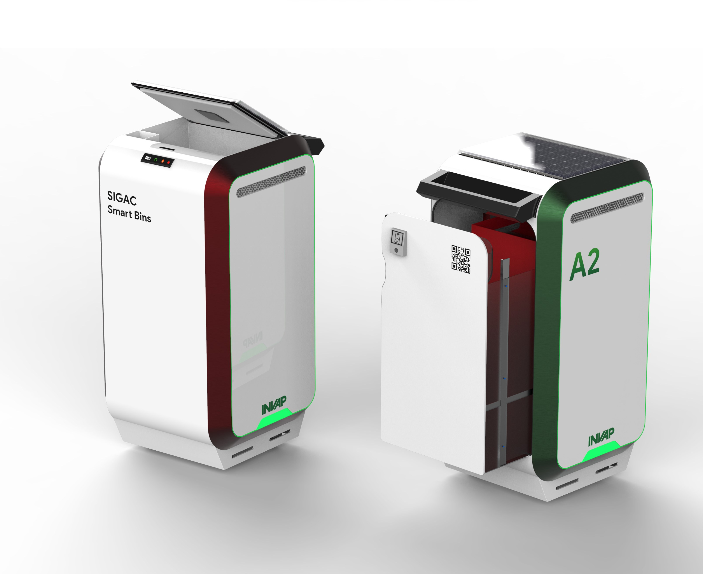
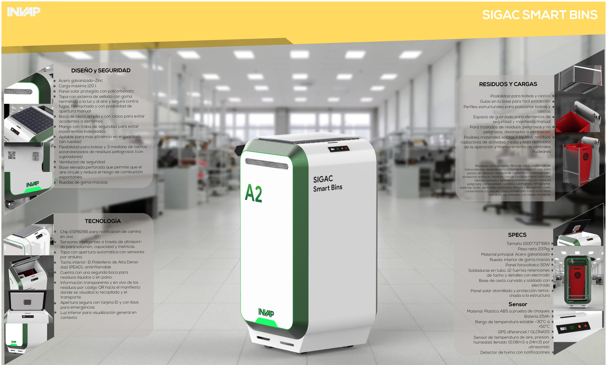
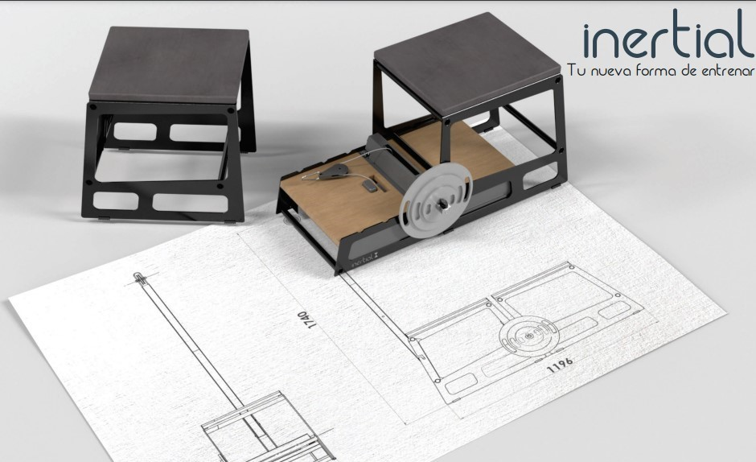
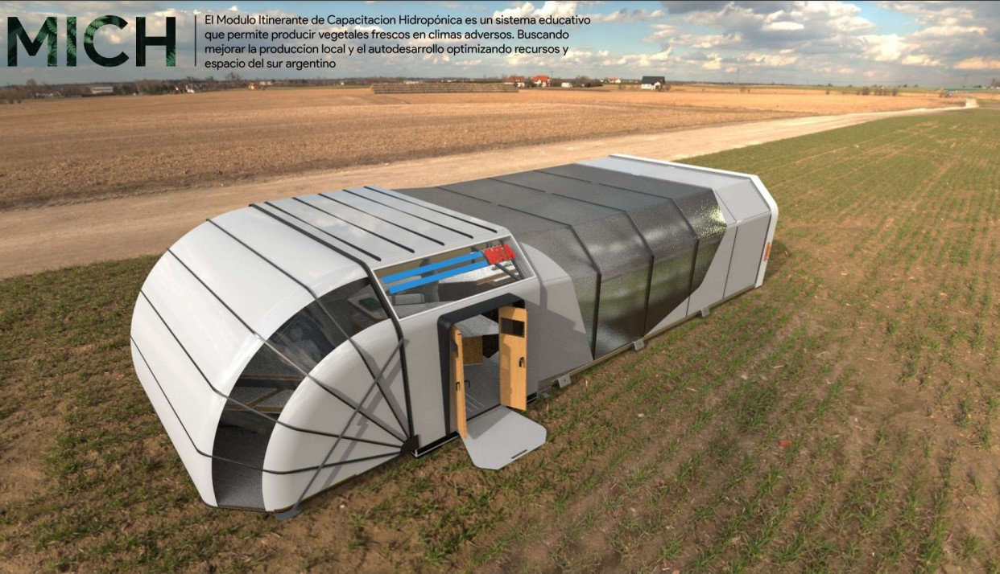
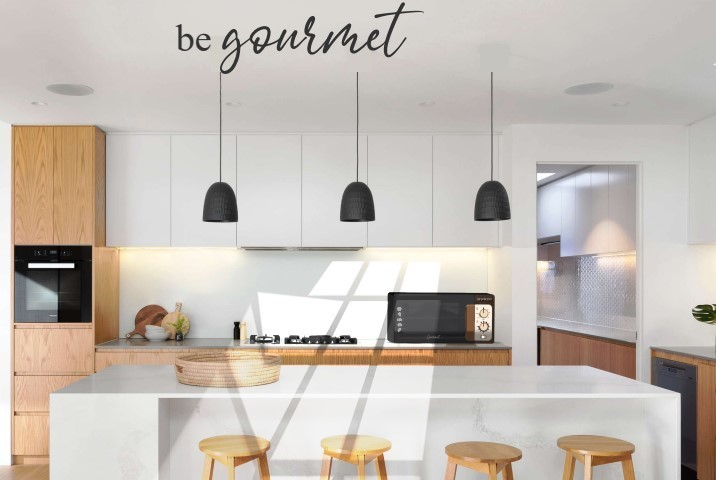
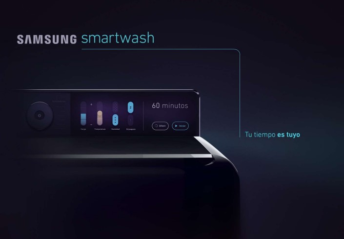
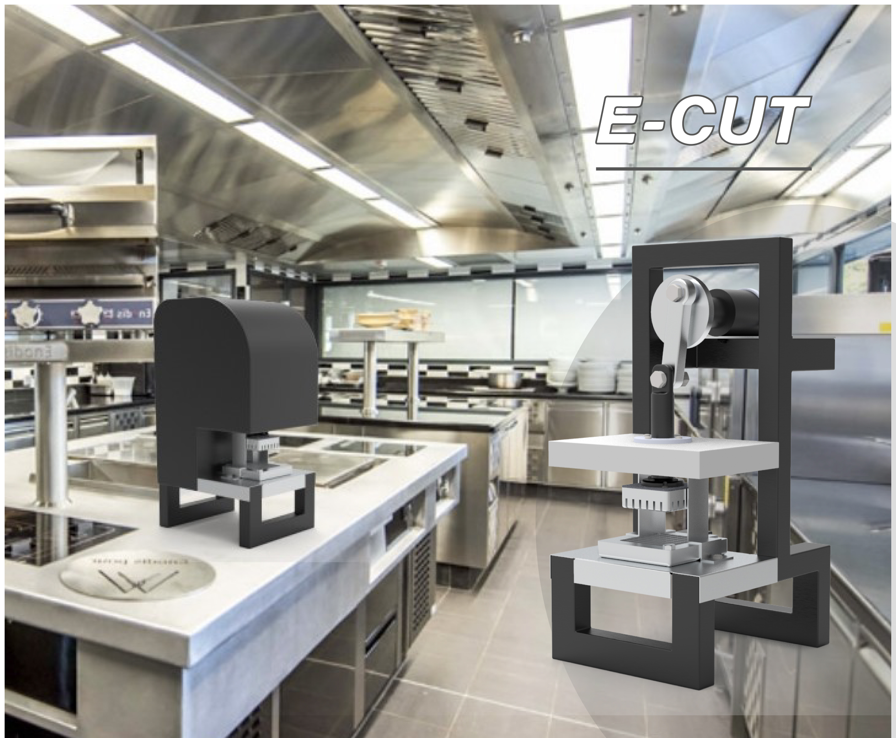

Dicember, 2021
Smart Bin
AMS
Asset Management System: within the concept of smart cities, we must think about what our asset management and maintenance systems should be, in terms of the demand for information and how we can take advantage of it.


The objective of the project is to implement an interconnected system where we declare in real time: characteristics of waste, company and vehicle responsible for the assets, transport route, specific waste data.
AMS seeks to strengthen any city or technology hub by empowering it to measure environmental impact by collecting waste data, safely managing radioactive waste and providing feedback to the system with new information in real time.

Whether your goal is to get an edge on your athletic performance, prevent or rehabilitate an injury or improve your general health and fitness, flywheel training with Inertial gives you a number of advantages.

MICH is an itinerant hydroponic training module, this educational system allows the production of fresh vegetables in adverse climates, seeking to promote local production and self-development, optimizing resources and space in southern Argentina.

Structural and functional design of an electric oven including commercial identity, pictograms, signs, materiality and textures.

Product design from structural to functional analysis. Together with materiality, color palette, finishes and look & feed. Digital approach from palette, UI elements, iconography and typography.

Optimizes cut quality and time, generating more work mild for the employee and allowing you to get more time to do other tasks.

Functional categories allow sectors to be identified in the object that specify the different possibilities of action promoted by it. In this project you can see various functional categories: ventilate/diffuse, pour, and functional zones such as commands and grip/grip.